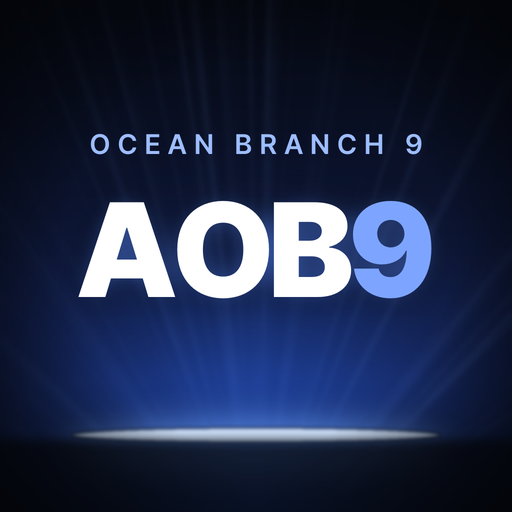

AFG OC9
Ocean Branch 9팀 고객관리 · 안드로이드 앱
앱 받기 (APK)- 위의 앱 받기를 누르면 AFG-OC9.apk 파일이 저장됩니다.
- 다운로드 알림 또는 내 파일 → 다운로드에서 파일을 누릅니다.
- “출처를 알 수 없는 앱” 안내가 나오면 설정 → 이 출처 허용을 켜고 뒤로 와서 설치를 누릅니다.
- 홈 화면의 AFG OC9 아이콘으로 엽니다.
앱은 처음 한 번만 설치하면 됩니다. 기능이 바뀌어도 다시 설치할 필요 없이, 열 때마다 자동으로 최신이 됩니다. 앱 껍데기가 바뀌는 드문 경우에는 앱 안에 “새 앱 버전” 안내가 뜹니다.
설치 없이 웹으로 쓰기 →